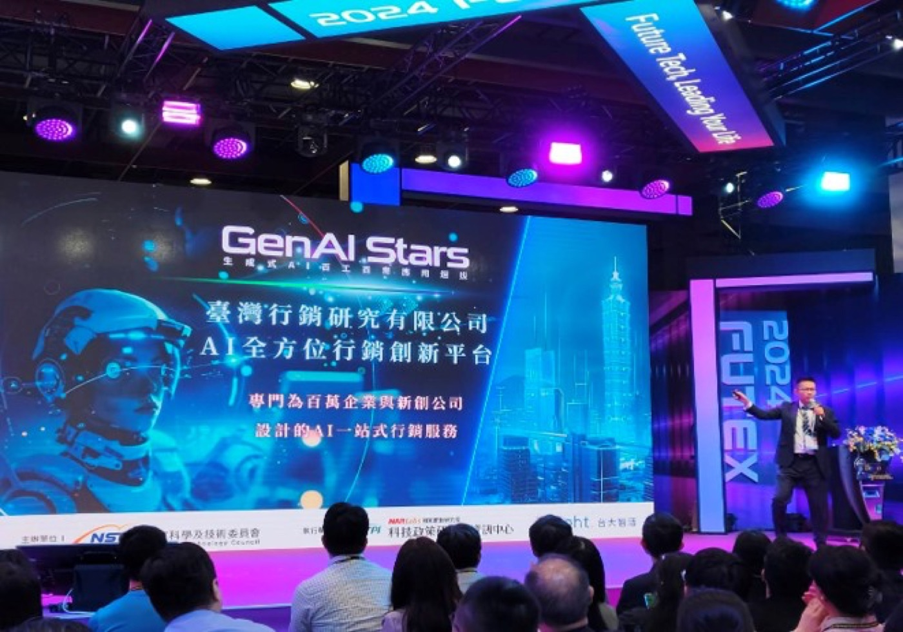
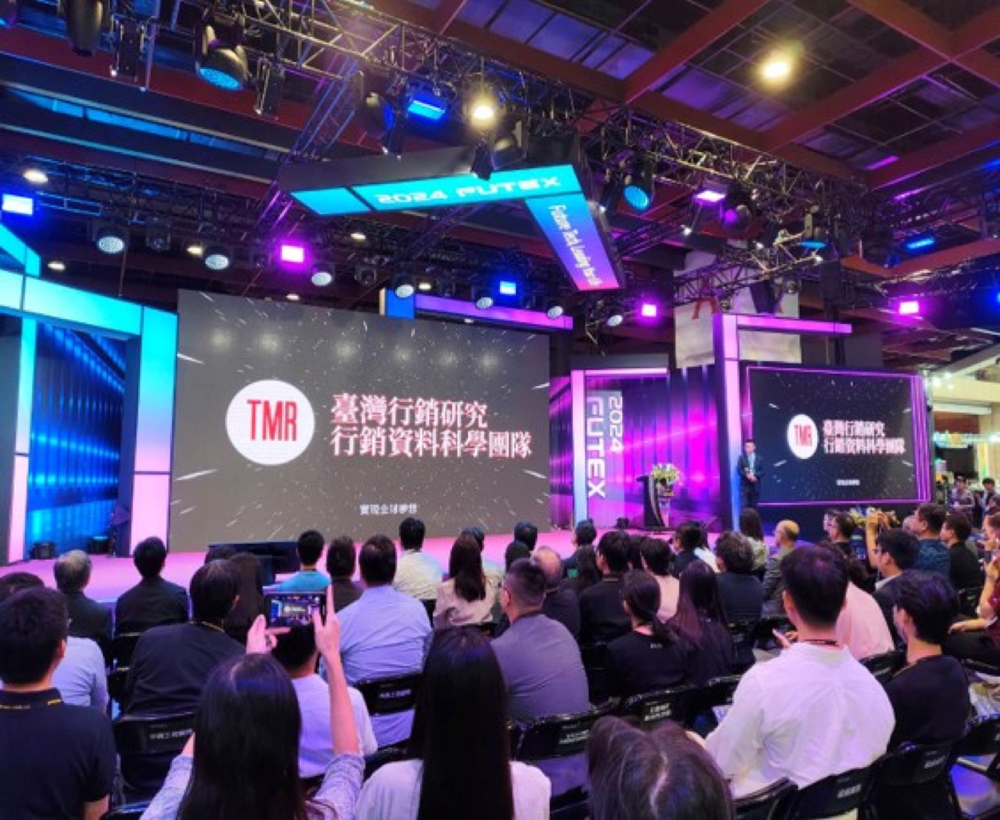
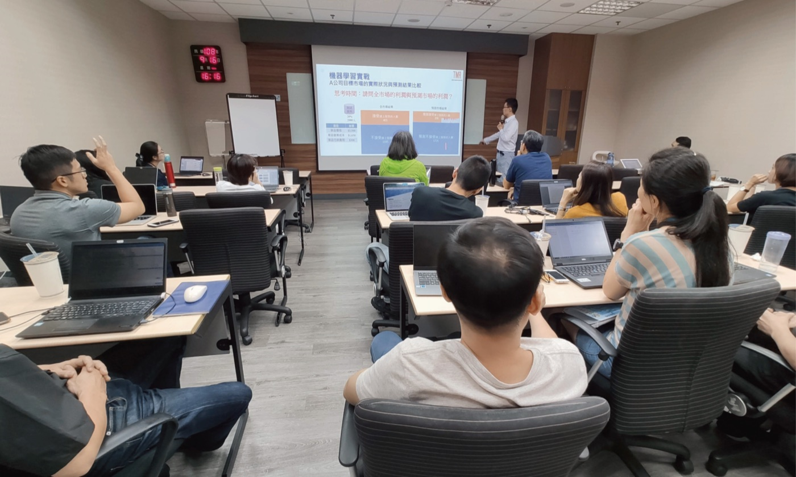
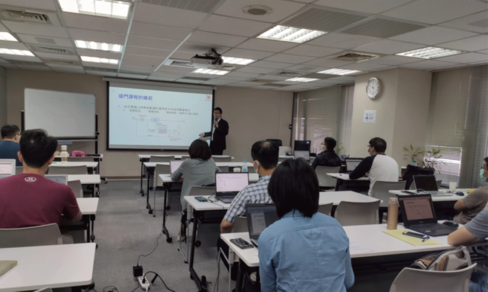
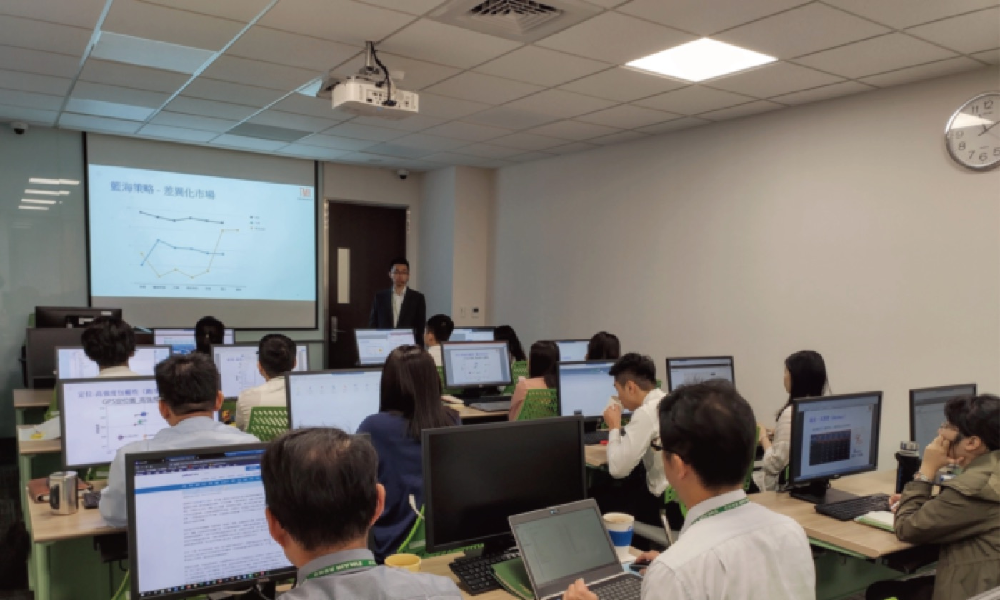
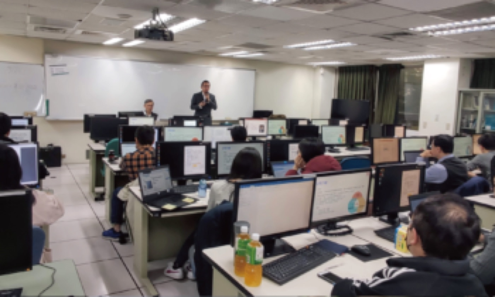

UI/UX 設計
2026.03.15
打造高端數位產品的 5 個視覺與互動關鍵原則
探討極簡奢華風與優雅白色科技風（Elegant White Tech）在現代 SaaS 與品牌網站中的應用與實踐細節。
Reading time: 5 min
Design Driven. Technology Empowered.
融合十年跨領域設計經驗、數位美學與前端技術，將創意構想轉化為兼具視覺魅力、直覺操作與商業價值的數位體驗。
結合視覺美學、使用者體驗與前端實作，打造高效、直覺且具備強大品牌記憶點的數位產品。
Beyond Design, Beyond Boundaries.
高嘉穎｜卓越動力股份有限公司 副理／前端設計師。
「以設計創造價值，以技術實現想像，讓每一次數位體驗都更有溫度。」
從平面視覺設計、品牌創意到網站介面規劃與前端工程實作，持續探索美學與技術的最佳平衡。相信優秀的設計不僅要具備視覺吸引力，更應兼顧使用者體驗、操作效率與商業價值。
曾擔任靜宜大學畢業 MV 編劇與導演，亦具備設計印刷公司設計專員經歷。從影像敘事、視覺傳達到數位互動設計，累積多元創作思維與溝通能力。
參與多項政府機關、金融產業及 AI 相關產品的網站與資訊系統專案（警政、衛福、國際貿易、消防、金融、AI應用），打造兼具專業與易用性的服務。
精通 Photoshop, Illustrator, InDesign, Figma，並具備 HTML, CSS, JavaScript, Tailwind 前端開發能力與 Adobe Premiere 影音剪輯實作經驗。
秉持細膩、務實且勇於創新的工作態度，重視團隊協作與設計細節，將複雜需求轉化為直覺、高效且具商業價值的數位解決方案。
Web & System Design Solutions
結合十年跨產業設計經驗與前端技術實力，提供從品牌視覺、網站規劃、UI/UX 介面設計到系統化元件建置的一站式數位設計服務。
從企業識別系統（CIS）、品牌視覺規劃到客製化網站設計，整合平面、影像與影片企劃，建立一致且具辨識度的品牌形象。
提供網站改版評估、使用者體驗分析、系統操作流程規劃、介面排版及互動微動畫設計，提升易用性與操作效率。
針對多裝置規劃 RWD 響應式版面，同步建立共用設計元件、Design Guidelines 與介面設計系統，提升協作效率。
A Multidisciplinary Creative Mind.
打造兼具質感與商業辨識度的品牌視覺與平面設計。
以使用者為核心，規劃流暢的資訊架構與直覺互動體驗。
將設計精準轉化為高效、響應式且符合前端標準的程式碼。
結合影像敘事與影片企劃剪輯，豐富數位品牌的動態表現。
Selected Works & Case Studies.
針對政府與大型企業專案需求進行資訊架構梳理，打造直覺易用的 RWD 響應式網頁與標準化介面設計系統。
將前瞻 AI 技術與複雜邏輯轉化為親和、流暢的圖形介面與互動體驗，降低使用者學習門檻。
從企業識別、色彩系統、標準字到網頁端視覺延展，建立兼具現代感與信任感的數位品牌印象。
建立跨平台共用元件庫與前端 CSS 樣式規範，大幅提升大型專案開發協作效率與長期維護彈性。
Keynotes, Corporate Training & Project Assessment.
從國際展會主題演講，到企業內訓與專案評估工作坊，與不同產業的團隊面對面，分享數位體驗與 AI 應用的實戰方法。






From Insight to Impact.
理解品牌目標、使用者問題與產品需求，透過訪談與資料分析，找出設計真正需要解決的核心問題。
整合資訊架構（IA）、視覺策略與互動需求，建立清晰、結構完整且可執行的設計規範與方向。
結合視覺美學、UI/UX 與前端技術，打造兼具吸引力、直覺操作與高互動品質的設計成果。
重視設計品質、跨裝置一致性與實際應用，讓設計成果能有效融入產品與業務需求，創造長期價值。
Insights, Ideas & Inspiration.
探討極簡奢華風與優雅白色科技風（Elegant White Tech）在現代 SaaS 與品牌網站中的應用與實踐細節。
從實務經驗出發，解析如何透過共用元件與設計規範消除設計與前端之間的隔閡，提升團隊協作效率。
人工智慧工具如何輔助設計流程與前端開發？探討在 AI 浪潮下，設計師如何保有不可替代的核心創意價值。
Products & Technical Solutions.
Find Me on Social & Send Your Brief.
有專案想法或合作需求嗎？透過表單告訴我您的專案背景、預期目標與時程，我將盡快與您聯繫。
Let's Create Something Meaningful.
無論是品牌網站、UI/UX 體驗優化，或企業數位系統設計，都期待透過創意與技術的整合，為你的下一個專案創造更多可能。
填寫下方表單，將於 1-2 個工作天內回覆您的諮詢。
背景說明文字...
挑戰說明文字...
角色說明文字...
成果說明文字...
文章內文...